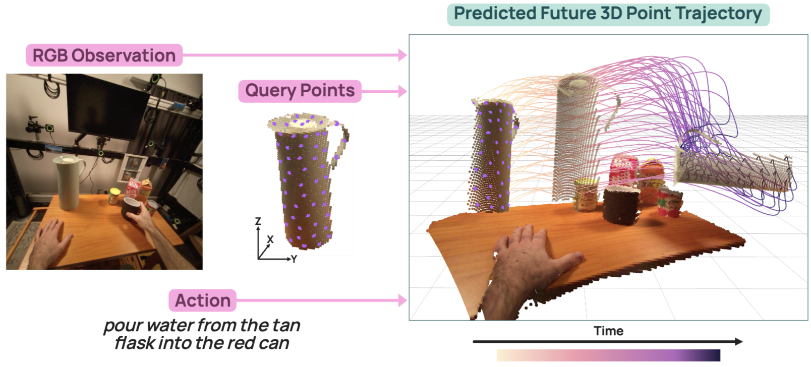

Jianing Zhang
I am an incoming M.S. student in Computer Vision at Carnegie Mellon University. I am currently a student researcher at the Allen Institute for AI (Ai2) and the RAIVN Lab at the University of Washington, advised by Prof. Ranjay Krishna. During that time, I have worked closely with Chenhao Zheng. Before that, I received my B.S. in Computer Science (Honors, Cum Laude) from the UW Paul G. Allen School, and was fortunate to work at Peking University and at Shanghai AI Lab. My research interest lies in computer vision and multimodal language models.
News
- 2026/02 TrajTok was accepted to CVPR 2026.
- 2026/01 Joined the Allen Institute for AI as a student researcher.
- 2025/04 Joined the RAIVN Lab at UW with Prof. Ranjay Krishna.
Research Interests
- Multimodal LMs Integrating vision, text, and other modalities for grounded understanding and reasoning.
- 3D / 4D Understanding Representation learning and generative modeling for spatiotemporal and 3D/4D data.
- Embodied AI Intelligent agents that perceive, reason, and act in interactive environments.
Selected Publications


Work Experience
-
Allen Institute for AI (Ai2) Jan 2026 – PresentStudent Researcher
-
RAIVN Lab, UW Apr 2025 – PresentStudent Researcher · with Chenhao Zheng and Prof. Ranjay Krishna
-
ZERO Lab, Peking University Jun – Sep 2024Student Researcher · with Prof. Zhouchen Lin
-
Shanghai AI Lab & Shanghai Jiao Tong University Jun – Sep 2023Student Researcher · with Fang Yan, supervisor: Wei Liu
Projects
-
Jane Street Market Data Forecasting Nov 2024 – Jan 2025Time-series forecasting (Transformer + XGBoost) over 40M+ rows; finished within 0.003 of the competition winner.
-
UW CIRCLE Application Jun 2023 – Jun 2024Cross-platform React Native / React app for UW's international student program.
Education
-
Carnegie Mellon University 2026 – 2027 (incoming)M.S. in Computer Vision
-
University of Washington 2022 – 2026B.S. in Computer Science, Paul G. Allen School · Cum Laude, Honors in CS · GPA 3.94 / 4.00